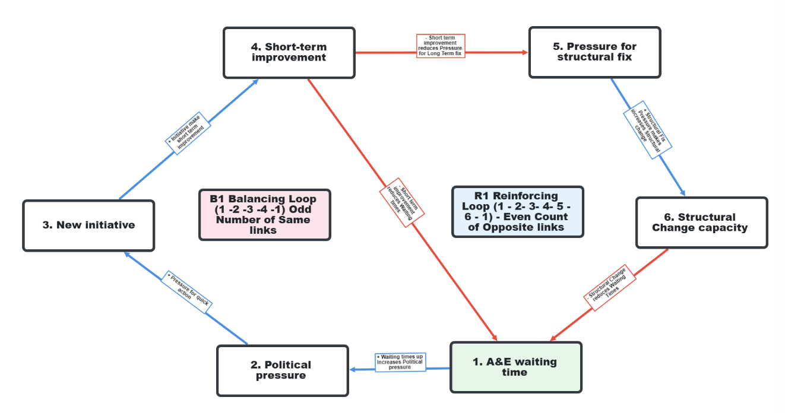
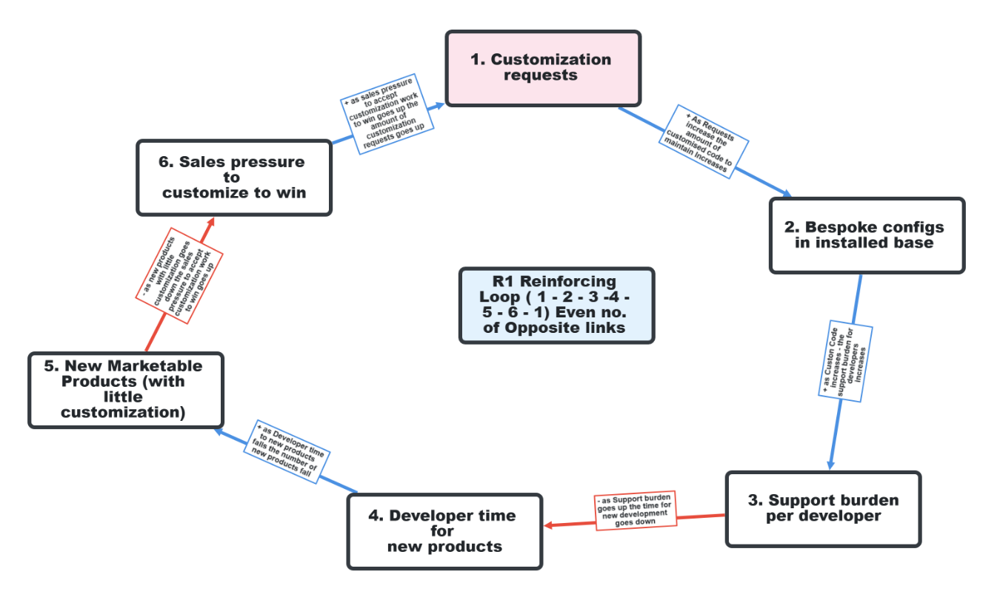

Causal Loop Diagrams
A Causal Loop Diagram maps the feedback structure of a system — the loops of cause and effect that cause a pattern to persist over time. Where the 5 Whys asks why a single event happened, and Behaviour Over Time charts describe what pattern the system traces, the CLD answers the deeper question: why does the system keep producing this pattern despite all the effort to change it? The answer is almost always in a loop that has not been broken.
☰ Contents
How to read a CLD
A Causal Loop Diagram has three elements:
- Variables — the key quantities in the system, written as nouns or noun phrases. Examples: A&E waiting time, number of support cases, developer capacity, diagnosis rate.
- Links — arrows connecting variables, each labelled with a polarity. A positive (+) link means: when the cause increases, the effect increases (same direction). A negative (–) link means: when the cause increases, the effect decreases (opposite direction).
- Loop labels — each closed loop is labelled R (reinforcing) or B (balancing), with a number if there are multiple loops of the same type.
Reading a CLD means tracing around a loop and asking: does this loop amplify (R) or stabilise (B)? A loop with an even number of negative links is reinforcing. A loop with an odd number of negative links is balancing.
Not “what caused this event?” (that is the 5 Whys question) but “what feedback structure is causing this pattern to persist?” The pattern will continue for as long as the loop structure remains intact. Breaking the loop — introducing a negative link where there was none, removing a link that was sustaining the loop — is what changes the pattern. That is a Level 3 intervention.
Reinforcing and balancing loops
Amplifies in either direction
Also called positive feedback. A change in any variable propagates around the loop and returns to amplify the original change. Can drive virtuous circles (growth, improvement compounding) or vicious circles (deterioration accelerating).
Produces: exponential growth, exponential decay, or a vicious/virtuous cycle. Breaks when a negative link is introduced into the loop.
Seeks a goal or equilibrium
Also called negative feedback. The loop resists change and pulls the system toward a goal or equilibrium. Not always desirable — a balancing loop that maintains the system at an undesirable level is the mechanism behind stagnation and resistance to improvement.
Produces: goal-seeking behaviour, oscillation (if delay is present). Breaks when the goal is changed or the gap-sensing mechanism is altered.
CLDs belong in Step 3 of the 7-step improvement method — root cause analysis. When the 5 Whys finds a root cause but the problem keeps recurring, the CLD reveals why: a loop is regenerating the root cause faster than the fix addresses it. The CLD turns the root cause question from “what caused this event?” into “what loop structure keeps producing this class of event?”
They also connect to Step 4 (dominant constraint): the constraint is almost always the variable that, if changed, would break the key loop. Identifying the loop points directly at what the constraint is and why previous interventions at other loop variables did not hold.
Worked example 1 — The NHS A&E spiral
Bootstrap CUSUM on NHS A&E performance finds four structural stages of decline and not one upward change point across 15 years. The CLD explains why no intervention has produced a sustained improvement: each intervention activates a balancing loop that prevents the system from reaching a genuinely better state, while a reinforcing loop drives progressive deterioration.

The key structural feature is that short-term improvement reduces the pressure for structural change. Every time an initiative produces visible short-term results, the political urgency to make the hard structural investment (bed capacity, workforce, primary care access) is reduced. The system settles back to a slightly worse level than before. Over 15 years and 20+ initiatives, this produces the Bootstrap CUSUM signature: four stages of progressive decline, no upward change point.
The only intervention that breaks this loop is one that produces structural improvement without reducing the pressure for further structural change — or one that makes the pressure for structural fix independent of short-term performance fluctuations. See the A&E analysis for the Bootstrap CUSUM data.
Worked example 2 — The customisation trap
The customisation trap is a reinforcing loop that progressively increases the constraint on developer time while appearing to generate revenue at each step. The CLD shows why saying yes to each individual customisation request is rational locally but destructive systemically.

The Bootstrap CUSUM signature of this loop unchecked is the decay pattern in new contract value and the stagnation pattern in support cases (they stay high rather than falling). Breaking the loop requires introducing a negative link: a portfolio policy that interrupts the connection between sales pressure and customisation requests — replacing it with a connection to a standardised Blueprint offer instead.
Worked example 3 — The dementia diagnosis loop
The dementia diagnosis rate shows an S-curve pattern: growth from 2012 to 2016 (reinforcing loop R1 dominant), plateau near the 66% target (balancing loop B1 activates), then collapse in 2020 (COVID special cause) and partial recovery. The CLD explains all three phases.

The CLD explains the Bootstrap CUSUM change points precisely. R1 produced the upward change point in 2013 when the PM’s Challenge activated the awareness loop. B1 produced the plateau change point in 2016 when political focus reduced. The COVID collapse is a special cause event superimposed on an already-stagnating system. The partial recovery is R1 weakly reactivating, limited by the B1 capacity constraint that was never addressed.
Where CLDs fit in the 7-step method
📈 CLDs in the improvement method
Step 3 (Root cause) — After the 5 Whys identifies the root cause of individual events, draw the CLD to understand why that root cause keeps regenerating. The CLD turns the root cause question from what caused this event? into what loop structure keeps producing this class of event? The loop that keeps regenerating the root cause is the target for the Level 3 fix.
Step 4 (Dominant constraint) — In a CLD with multiple loops, the dominant constraint is the variable whose change would most disrupt the key loop. In the A&E CLD, the constraint is structural capacity — because it is the only variable that, if addressed, would break the B1 loop by making short-term improvement produce lasting change rather than pressure relief. In the customisation trap, the constraint is the absence of a portfolio policy — the link that, if added, interrupts the reinforcing loop.
Step 5 (Complete solution) — The necessary but not sufficient test applied to a CLD: a solution that addresses one variable in a loop but not the loop structure itself is necessary but not sufficient. The complete solution changes the loop — adds a link, removes a link, or changes the polarity of a link — so that the pattern changes structurally.
Step 7 (PDSA — Study) — The CLD predicts what Bootstrap CUSUM should show if the loop is successfully broken. In the customisation trap: if the portfolio policy breaks the R1 loop, we expect a downward change point in support cases and an upward change point in developer output. Pre-specify both. Bootstrap CUSUM delivers the verdict.
CLDs and Bootstrap CUSUM
The CLD and Bootstrap CUSUM answer complementary questions. The CLD explains the mechanism — why the pattern persists. Bootstrap CUSUM confirms whether the pattern has structurally changed — and dates the change precisely.
Used together, they form a complete analytical framework:
- BOT chart → identifies the pattern (stagnation, decay, oscillation)
- CLD → identifies the loop structure producing that pattern
- Bootstrap CUSUM → confirms whether the intervention broke the loop, and dates the break
This is the less obvious but equally important use of CLDs. A CLD of the A&E system predicts that Bootstrap CUSUM will find no upward change point from any short-term initiative — because the B1 loop absorbs every short-term improvement before it can produce structural change. This is not a failure of the analytical method. It is a prediction confirmed by 15 years of data. The CLD explains the data. The data validates the CLD. Together they make the case for the structural fix that will actually break the loop.
Causal Loop Diagrams sit at Step 3 of the 7-step improvement method. See Behaviour Over Time for the prior step — identifying the pattern. See Why Nothing Changes for the broader diagnostic framework that CLDs support.